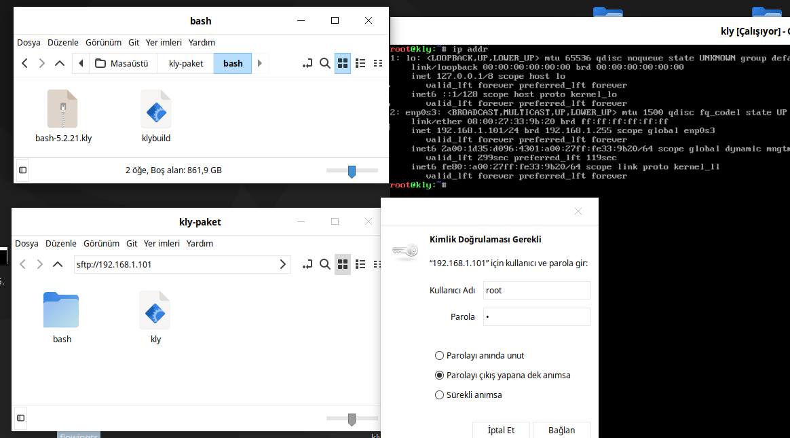
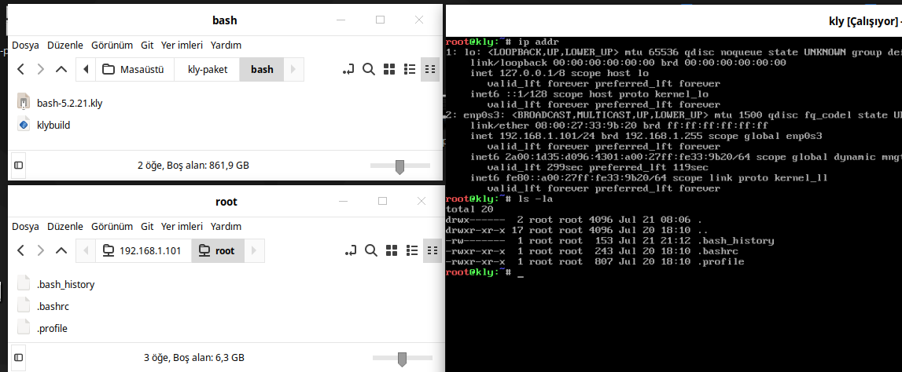
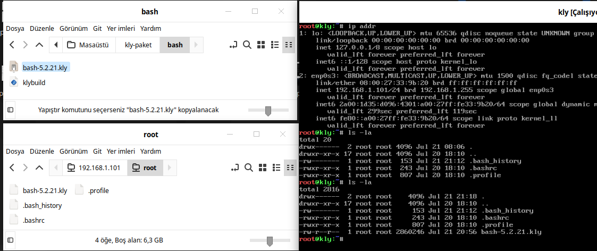
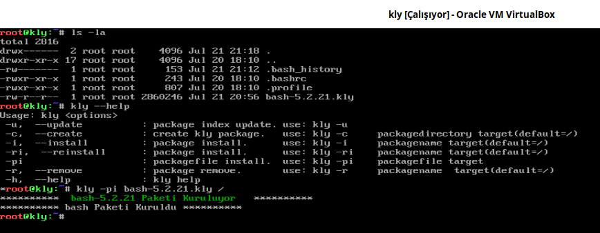

kly ile Paket Kur¶
kly Paket Sistemi ile paket oluşturma konusunda bash paketi derlenmişti. Şimdi ise bu paketi Temel Sistem üzerine kopyalamayı ve kurma işlemini yapalım. bash paketimiz masaüstümüzde kly-paket/bash/bash-5.2.21.kly konumunda bulunmaktadır. Bu konumdaki dosyamızı Temel Sistem üzerine scp veya sftp kullanarak kopyalayabiliriz. scp terminal üzerinden kopyalar. sftp terminal veya pencere yöneticisi üzerinden kopyalar. Burada tercih size kalmıştır. sftp ile pencere yöneticisini kullanmak daha kolay olabilir. scp ve sftp kullanımı Yardımcı Konular bölümünde detaylıca anlatılmıştır. Ayrıca Temel Sistemin Hazırlanması bölümünde de scp ve sftp Temel Sistem ile nasıl kullanılacağı anlatıldı.
Aşağıda sftp ile nasıl bağlantı yapılacağı görülmektedir.
{kind=link}

Aşağıda sftp ile bash-5.2.21.kly paketini kopyalanma öncesi Temel Sistemde olup olmadığını ls -la komutuyla kontrol ediyoruz.
{kind=link}

Kopyalama işleminden sonra bash-5.2.21.kly paketinin Temel Sistemde olup olmadığını ls -la komutuyla görüyoruz.
{kind=link}

kly paket sistemini kullanarak yerelde bulunan paketin kurulumunu kly -pi bash-5.2.21.kly / komutuyla yapıyoruz.
{kind=link}
